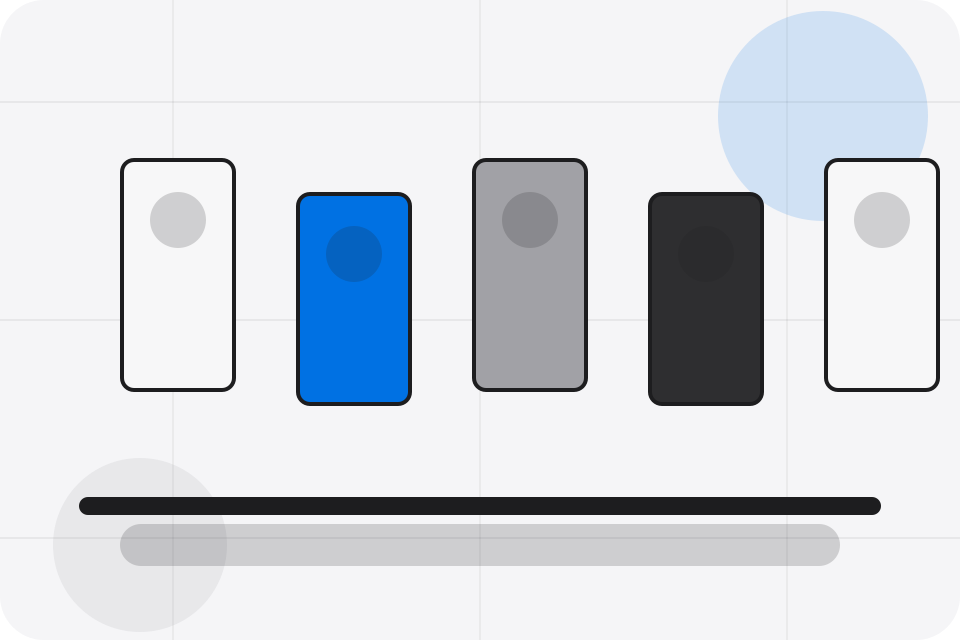
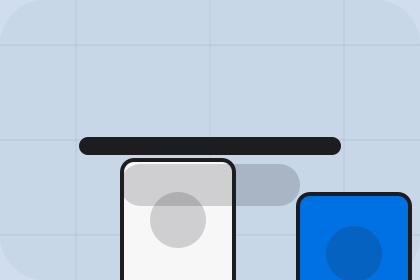

FAQ / 01
FAQ by Corner
FAQ shaped for retail, shops & consumer sales decisions.
FAQ opens as a clear retail decision hub: what Corner offers, who it helps, why it matters, and which route to take first.
The first screen combines positioning, proof, primary action, and fast internal navigation, so people can act immediately or compare the rest of the faq route with context.
Browse quicklyCompare clearlyAsk availability
Soft product shelf hero
Filter the catalogue
Select the closest route and Corner keeps the next step, proof, and follow-up expectation aligned with convenience and offer discovery.

FAQ / 02
Returns
Returns handles buying doubts directly so visitors can understand timing, fit, limits, and the safest next step.
Answers are short by design: enough to remove hesitation, not so much that the page turns into documentation before the visitor can act.
Explore FAQQuestion
Returns gives the page a specific angle instead of repeating the navigation label.
FAQ / 03
Delivery
Delivery handles buying doubts directly so visitors can understand timing, fit, limits, and the safest next step.
Answers are short by design: enough to remove hesitation, not so much that the page turns into documentation before the visitor can act.
Explore FAQQuestion
Delivery gives the page a specific angle instead of repeating the navigation label.
Answer
The rounded product tiles show what to compare, what to avoid, and what matters most for retail, shops & consumer sales visitors.
Next Step
The final cue points to a useful internal route so the section keeps the journey moving.
FAQ / 04
Payment
Payment makes commercial comparison easier by showing fit, scope, and terms before retail visitors ask for the next step.
The layout keeps price-sensitive decisions honest: it separates starting scope, fuller delivery, and ongoing support so the visitor can ask a sharper question.
Explore FAQ- 01
Fit
Who the offer is for, which scope it suits, and when a different route may be better.
- 02
Scope
What is included clearly enough for retail, shops & consumer sales visitors to compare value without hidden jargon.
- 03
Terms
The practical details that should be confirmed before someone asks to visit the shop.
FAQ / 05
Stock
Stock handles buying doubts directly so visitors can understand timing, fit, limits, and the safest next step.
Answers are short by design: enough to remove hesitation, not so much that the page turns into documentation before the visitor can act.
Explore FAQCorner structures stock around question, answer, and a clear next route so visitors can compare the block quickly before they visit the shop.
Visit ShopFAQ / 07
Stores
Stores handles buying doubts directly so visitors can understand timing, fit, limits, and the safest next step.
Answers are short by design: enough to remove hesitation, not so much that the page turns into documentation before the visitor can act.
Explore FAQ
Question
Stores gives the page a specific angle instead of repeating the navigation label.
Answer
The rounded product tiles show what to compare, what to avoid, and what matters most for retail, shops & consumer sales visitors.
Next Step
The final cue points to a useful internal route so the section keeps the journey moving.
FAQ / 08
Care
Care handles buying doubts directly so visitors can understand timing, fit, limits, and the safest next step.
Answers are short by design: enough to remove hesitation, not so much that the page turns into documentation before the visitor can act.
Explore FAQCare gives the page a specific angle instead of repeating the navigation label.
The rounded product tiles show what to compare, what to avoid, and what matters most for retail, shops & consumer sales visitors.
The final cue points to a useful internal route so the section keeps the journey moving.
FAQ / 09
Support
Support explains the practical scope, best-fit situations, and expected outcome so retail visitors can compare options without decoding jargon.
The section keeps the offer concrete: what is included, who it is best for, what decision it supports, and which linked route gives the deeper detail.
Open Contact- 01
Best Fit
Who should use support and when it belongs in the faq journey.
- 02
What Changes
The practical benefit visitors should expect after choosing this route.
- 03
Deeper Route
Where to compare details, pricing, support, or contact options before committing.
FAQ / 10
Visit Shop
Corner closes the faq route with a clear action, a quick reminder of the value, and a low-friction way to visit the shop.
Visitors who are ready can use the primary action. Visitors who are still comparing can scan the section links, proof, and support routes before they visit the shop.
Visit ShopThe final block keeps the choice simple: act now, compare one more proof route, or send enough detail for a focused response.
Visit Shopconvenience and offer discovery
Visit Shop
A retail shopfront with clean product shelves, rounded offer cards, service proof, and store-finder CTAs. FAQ ends with a direct path to visit the shop, plus enough context for visitors who still need to compare.

Visit ShopNotes
Information is provided for planning and should be reviewed for the final client, location, and operating rules.